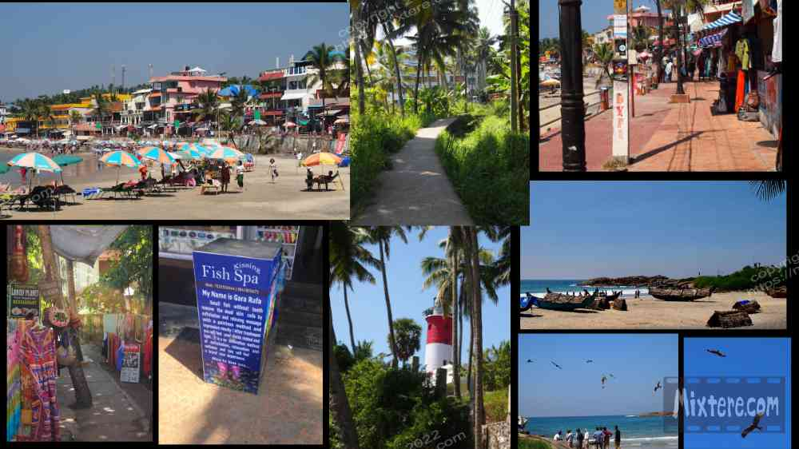

*Note: COVID struck not long after this chapter of my journey. In the time that has passed I have gotten to know the place better and changed some of my views. I have tried to leave the original writing intact, to be followed by more recent experiences. These entries are about sharing the journey and my voice at the time, however uniformed it may have been.*
I recall that Trivandrum was about 12 hours by train from Pondicherry. Thankfully the trip was largely uneventful . I watched from my the sleeper-car window as the land outside gradually transformed from dusty and parched earth to rich greenery and deep blue skies. I chatted up a man in my car who was in publishing and traveling to do some business down south. I had not been to Kerala since the late nineties and was struck by what seemed to be the man’s western, business sensibility. He was wearing slacks, an oxford shirt and toted a briefcase. For me this was a first glimpse into the largely literate, business minded, more prosperous cultures of urban Kerala. It was a strange juxtaposition to be the westerner on a soul seeking journey, rattling along the tracks with a buttoned down Indian businessman.
But many westerners are drawn to India for the many things that their home cultures are missing. For me these consisted of slower, more humane pace, time for introspection, space reserved for discovery, spirit and even mysticism. It seemed that this man and so many other Indians that I encountered were heading in the direction I was headed away from. That is, the modern life of promised “achievement” via institutions, corporations, capitalism and consumerism. If I had felt a kinship with my linear, business and consumer oriented culture I would not have been on this journey in the first place. We were respectively civil but the exchange between this man and I was brief. The conversation, between soul-searcher and businessman, went about as well as you would expect. He opted to attend to his papers and I the passing scenery.
At this point my travel chops were back and I was getting wiser with each additional leg of the journey. For instance, upon arriving in Trivandrum I honored my exhaustion and hunger by walking across the road from the station to a restaurant to rest and refuel. Past iterations of my bumbling, traveling self would have seen me stressing to secure transportation and then lodging immediately upon arrival, unnecessarily adding stress upon stress. It took a lot of suffering for me to learn to prioritize and to pace myself. Having said this the arrangements I had made through the surf school in Pondicherry had eliminated a lot of the unknowns and helped me to relax. It is also probably true that Mani, my contact in Kovalam, had transferred some calm, beach vibe to me through my correspondence with him.
The simple canteen across from the station was good. South Indian food is quite favored among many travelers (myself included). It’s hard to say why this is. Perhaps it is the presence of coconut in so many dishes. The sambas and delicate idli and uttapam, the savory, crispy dosas, chutneys with the many complex and inviting flavors…it’s simply good. The emphasis on rice and coconut instead of wheat and lentils was a welcome change. What I also noticed was the others at the canteen were eating and minding their own business. I was left alone and did not seem to be drawing the stares or responses that I had come to expect from my experiences in North India. This was a welcome change.

To counter this I regularly sought out fresh pineapple and passion fruit. All of the offerings at Earth Home were uncooked. Martial insisted that it was all safe. Earth Home's offerings were quite weird to say the least. For example, one day I had a spirulina-beet-apple-ginger juice accompanied with soaked rice and a carefully arranged vegetable salad assembly. Being a health-oriented eater but not a “health nut,” I still made quite a lot of return visits to Earth Home. The sometimes delightful sometimes disgusting dishes and juices were a welcome change to my budget-backpacker diet. On Auroville beach I met a group of hard-partying Indians who had hopped a train from Chenni for a mini-vacation. I guess I was desperate for company as I hung out with them until I saw how fast they drank whiskey. My conclusion was reinforced when I learned about them almost being jailed and paying a hefty baksheesh the night before for drunk motorcycle driving. I dodged meeting them for drinks but we had coffee at Gandhi Beach instead.
Audible around me were different languages- Maliyalum, Tamil and possibly the tongue of Karnataka. Not speaking either language, I am not sure the degree to which Hindi was spoken but I didn't seem to be hearing it. The weather was hotter and more humid than Pondicherry. Although it was January and the cooler season, I found myself sweating profusely enough outside the bus depot to unfurl an umbrella. As far as traveling I was continuing in my pursuit of traveling as the locals did. Not being a local and not speaking or reading the languages… I was having trademark difficulties finding the right bus.
There seemed to be little rhyme or reason to the bus depot- surprise! I asked people about the bus to Kovalam, was told a variety of things. I waited in the wrong areas for a while, picked up my stuff, moved, asked again, was misdirected again, asked again and finally found the right stop… I thought. Within fifteen minutes the bus came, passengers were seated and we were on our way through the streets of Trivandrum. The city did not strike me in any particular way other than having the many streets and shops and vehicles that one expects of a large city. In the sprawl there were occasional residences tucked away from the road that caught my eye. They were draped in lush vines and in the shade of vibrant greenery. These homes were appealing in contrast to the dusty red earth, the streets of searing asphalt, the battered metal roofing and the pasted advertisements peeling in the tropical sun. Trivandrum was a little less crazy than the others cities I had traveled to. People did not seem so hurried, so severe. And on the street they did not hound me as a walking opportunity.
Rattling along in the bus and looking out the window I was sensing that although I was in the same country, I was in a new land. Naturally this brought the excitement and stress of not knowing what to expect or what was proper to do. And so I was a little alarmed when after 24 hours on the road the bus simply dumped me on the side of the highway junction toward Kovalam. I sat on my pack on the roadside and called Mani, trying to tell him where I was. It was likely that I had not taken exactly the correct bus. The locals had probably figured, well, “close enough!”
Within ten minutes Mani came rumbling up on his Enfield bullet. Again I swallowed my male American pride, strapped on my pack and got on the back for the ride to the guest house. Within four minutes we were descending into a sort of valley in the coastal lowlands and threading a narrow road crowded by spas, guesthouses, spice merchants and other buildings. I noticed taxis, rickshaws, shops, restaurants, Ayurvedic retreat centers and large, singed foreigners all around. Mani pulled up at a two story building with a restaurant below and killed the ignition on the bike. We had arrived.
Because of the high cost of my hotel room in Varkala many years ago, I was delighted with the value of the room at Mani’s guesthouse in Kovalam. Costing 400 rupees, well below ten dollars at the time, my room was very large and would have easily accommodated two people. It was clean, the surfaces were relatively new and finely finished and the bathroom looked newly tiled and finished. The location was central, with the beach and shops and many restaurants a five to ten minute walk away. The sea air and breezes were welcoming. I was grateful to be there and have Mani taking care of the issues of transportation and lodging with so little hassle. It was obvious I was in a beach town now. People walked around wearing board shorts and sometimes not even a shirt. Finally I could retire the long sleeved shirt and pants I had been making myself wear. What a relief! Kovalam had some similarities to Laguna. And the ocean and its breezes always has a powerfully grounding, anti-depressant effect on me.
The next day I was very excited to walk to the beach, have a look around, even go body surfing. In the process of all this I started to get a sense for the place. About half a block from my guesthouse started a pedestrian walkway that was closed to cars. It was a sort of raised cement platform with swamp on either side. It progressed to filled-in land with hotels, guesthouses, shops and restaurants butted very close to each other. The pathways got quite narrow, prohibiting escape from the tourist. I therefore learned to refer to these areas as "the gauntlet." The shops and restaurants obviously catered to the tourists, of which there were many. They were mostly composed of Western Europeans but there were Russians too and the odd American. After being in places that reflected distinct, specific Indian cultures, being confronted with a motley glut of establishments designed to appeal to visiting tourists was jarring.
I was soon to learn that “tourist culture” dominated Kovalam, visually and otherwise. A similar thing had happened to Laguna Beach long ago. You cannot buy socks or auto parts or a lot of other utilitarian things there. You have to go to the inland "sub-towns" for these. What you can buy are corny t-shirts, expensive meals and drinks and mass produced chochkeys of the California beach culture that are so overly-marketed. What Kovalam seemed to be doing was importing the interests of the visiting foreigners, with little showcasing of “local culture.” Instead of Masala Dosa, pizza was offered. Instead of Indian sweets, ice cream and cold beer was offered. It all had the effect of making the beachfront look like an amusement park, of the coney island rather than the Disneyland variety. Kovalam was not going to be deemed a UNESCO heritage site any time soon.
Having said these things, the lack of taste or local culture was made up for by a liveliness facilitated by the sheer volume of tourists fed by these goods and services. After three isolating months far off the tourist trail I was now ready to embrace it. I was ready to embrace not being the only alien about. I was ready to embrace the huffy French tourists, I was willing to tolerate the men in bb bags on the beach because it came along with the sight of the women in bikinis. This last sight was a little startling after being in such conservative environs for so long and not even being able to look at or address women. I had not even been able to wear shorts and short sleeves. At the beach in Puri Indian women bathing in the sea were fully clothed in a saris. I seemed ridiculous and a good way to drown. Here in Kovalam I noticed Indian men posted on the beach, their eyes lingering far too long on the pink exposed skin of the foreign ladies. I even noticed a couple of women in thongs. This just seemed downright stupid. I doubt that most understood the messages they were sending to misunderstanding Indian men. I worried a bit for the safety of these ladies. But it was time to set Professor Robert’s “how to behave in India” training aside and allow myself to be the foreigner that I was. I was now in a place where I could wear surf trunks and go out for a beer if I wanted to. It was quite liberating.
Kovalam is an enigmatic place. It is very touristy and full of hustlers and touts and tacky restaurants and yet... it is also wonderfully calm and can exude an easy-going aloha feeling. This lends to a friendliness and approachability from both locals and visiting westerners alike. Here it is easier to relax, approach people and be approached. Here there wasn’t the tension that I usually experienced traveling India. In Kovalam there was almost always a breeze blowing, lightening up everything. As you walked to the beach there were often eagles soaring from the treetops, emitting their cries. The main beach is often crowded and is a marvelous place for people watching. This helps to distract one’s attention from the plethora of trash and oil in the sand. I still don’t know why the oil is there. Is there an oil derrick offshore? Was there a spill? I suspect the local fishermen and tourist speedboat drivers that park their boats right there on the sand. The oil is in the water. It stings your eyes, stains your hair.. even your comb! Mine was black after three weeks at the beach. But the waves and salt water and the ability to let one’s hair down made it all worth it.
Along with the breeze and sun bathing the most constant thing in Kovalam is the incessant hustling of goods and services from shop, retreat and restaurant staff, rickshaw, taxi and speedboat drivers, etc. The foreign visitor is constantly harangued by these people. Since there were now other foreigners around me it was nice to have other travelers share the brunt of these attacks. Some of these visitors were even available for a chat or a drink. Kovalam had a knack for sucking people in and holding them there much longer than they had intended to stay. It was not uncommon for people to stay three or four months. I ended up staying almost a month which was much longer than I had anticipated. I got a lot of writing done and I met a some fellow travelers whose company it turned out I had needed. Plus I got to surf which was a rare privilege for me in India.
It took me a while to learn to completely ignore the hustling touts. I think being an American made it harder because for the most part we are a culture that is taught an obligation to respond politely to inquiries from strangers. This is definitely not the case with the Russians or Europeans that I observed in Kovalam. They had no problem cooly ignoring these touts. I took some lessons from them. And although one could not walk the boardwalk without the constant selling pressure, this was not the Taj Mahal- the epicenter of tout-thuggery as far as I can tell. I learned to look beyond the short-comings and appreciate the place. Many of the foreigners are there on holiday from Europe and it seemed that the high priority for a great many of these folk was serious sun bathing. Although it was the cooler season the sun was still very strong. These leathered beach urchins would lay in their rented lounge chairs a good part of the day and bronze to an absolute crisp. Then they would head to the bar to top the day off. I marveled at their stamina.
And so Kovalam sucked me in like a wave and held me in its warm embrace for the better part of a month. And I did actually ride the physical ocean waves too, which were better than they were in Pondicherry. During the tale end of my stay I became involved in an unfortunate sort of intrigue. In a town this small in time you learn to know who is in town. I got to know an older Hungarian woman that frequented the roadside dosa restaurant outside the temple. We hit it off and I guess my need for company allowed me to disregard the fact that this woman was already partnered with someone else. I told myself that it was just a friendship between us, but I was in denial of the fact that it was more. This lady had a sparkiness to her and a wonderfully lively spirit. Unlike me she was an experienced traveler in Asia and provided many tips and tricks. But I in this lady I had found someone that was not available. In the end I made the decision to leave Kovalam and simplify the matter. Even after doing so it was not an easy thing to extricate myself from. As you may have guessed, for me, moving physically is a well-practiced response to life. I made the decision to continue my adventure and head up the west coast.